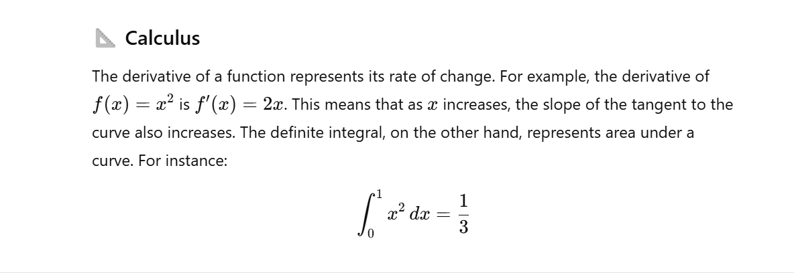

⚙️ How to Use
- Enable the extension from the Chrome toolbar
- Toggle Math Paste with
Ctrl+Mfor windows orCmd + Mfor Mac - Hover over the UI and select your notebook or format.
- Copy the rendered Math from the AI Chat from top to bottom.
- Paste in your note book and done!
Correct Copy Method Demo 1
Correct Copy Method Demo 2
Incorrect Copy Method Demo 1
Incorrect Copy Method Demo 1